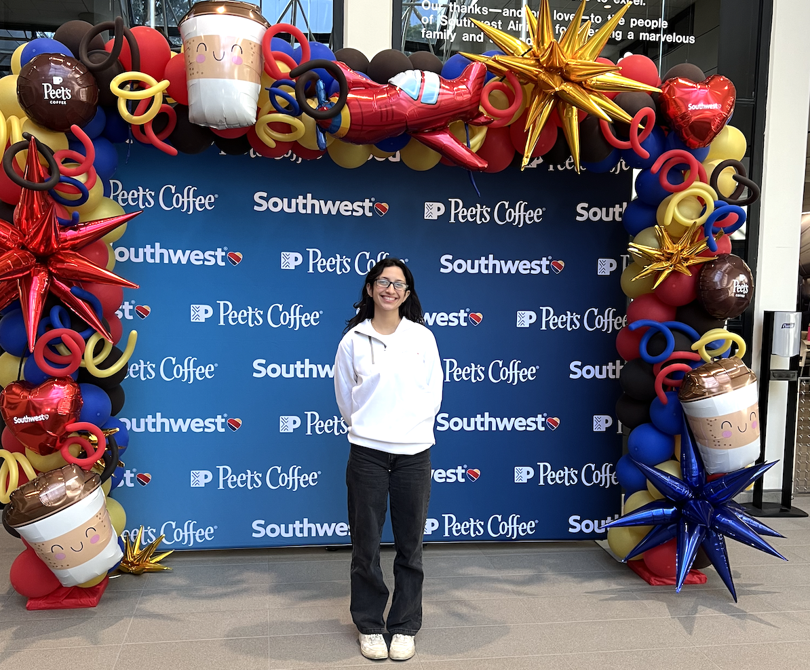
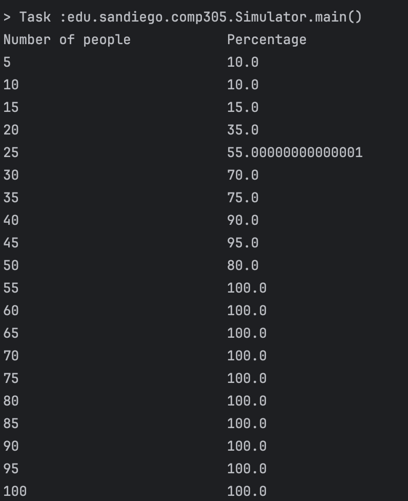
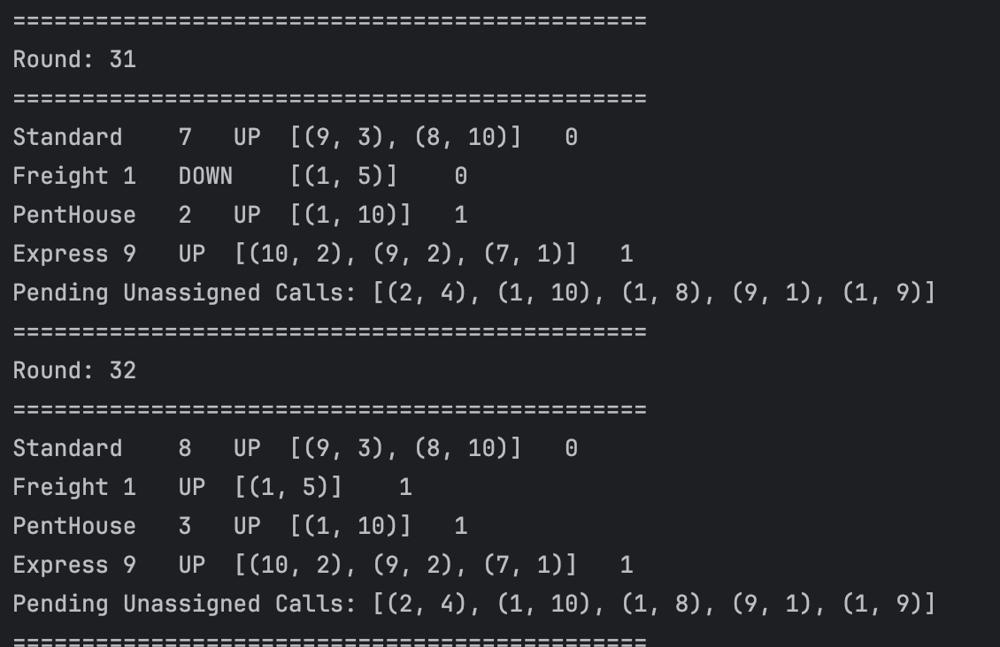
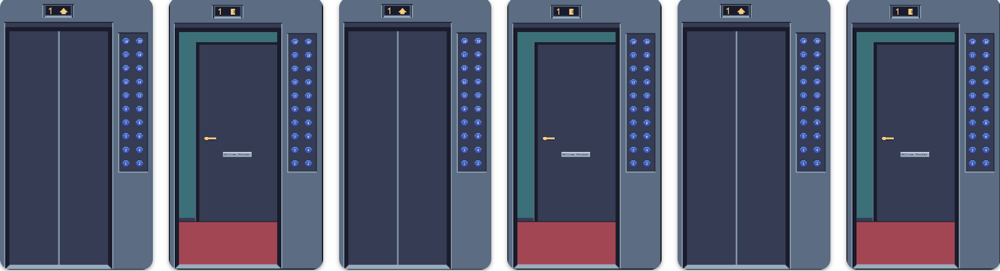
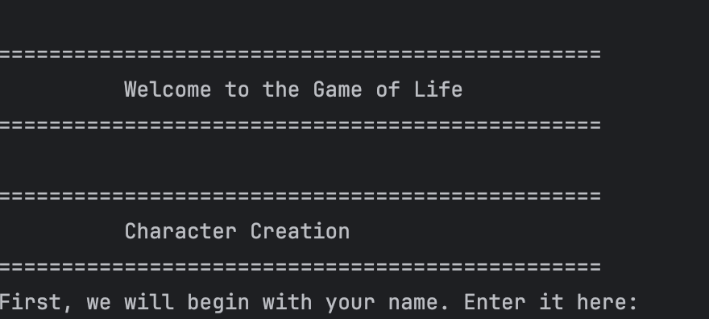
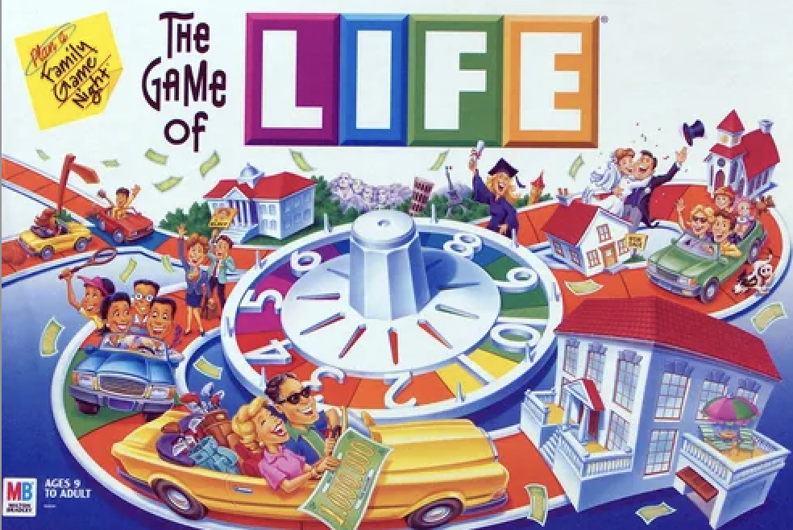

Hi my name is Penelope Yanez, I am a Computer Science student at the University of San Diego with a focus on cybersecurity and AI programming. I am a research student, children's STEM intructor, and active ACM club member.
I have published a paper regarding the best encryption methods for healthcare based AI tech, as well as conducted research examining cost effectiveness of varying AI deployments. I am certified in cloud computing and basics in cybersecurity, and I am always working towards earning another certification or seeking learning opportunities.
I am a proud cat mom to a sweet girl named Callie. I also love to run and hike along trails in San Diego. I enjoy live music, especially EDM and Rock.

In a simple yet surprising experiment, the birthday paradox finds that if there are only 23 people in a room, then there is a greater than 50% chance that at least two people share the same birthday! Even more impressive is that with over 57 people the likelihood increases to 99%. Thus, out code sought to not only illustrate the birthday and experiment but simulate through trials just how spectacular the outcomes are.
Through a simulation we create an experiment for a set number of people and trials to print out the expected results of the paradox. Through systematic programming we run different experiments and extract different outcomes based on trials and percentages of repeated/matched birthdays. At the based of our project we include a random number gnereator to ultimately output the various birthdays. All coincide to create a scientific testing of the birthday paradox. We focused our efforts on creating simple, clean code, to effectively represent the different steps in the process of representing the birthday paradox.
This project was a great introduction to working with a team and utilizing key elements of object oriented design. Through tedious testing, consistent communication and collaboration I was able to create a functional representation of random birthdays, and proper experimentation on this project.
This project was a great introduction to utilizing gitHub for collaboration with a partner. We actively utilized pull requests and cmmenting to ensure the functionality and clarity of our code. I also gained more experience with mock testing and JUnit testing for various methods and cases.

The goal of this project is to create a properly working elevator system simulator that follows a schedule to effectively distribute the use of the elevators among people in the building. The program must track the elevator's floor, occupancy, direction, and assigned calls based on our scheduler. Within the programming we will utilize skills such as test driven development to guide our code in creating maintainable and clear design, guided by OOP standards. Through the use of SOLID principles we will create clean, reusable code in our design of each elevator and the scheduling system.
To implement the elevators themselves we will need to extend the elevator abstract class to create the specified functionality for each elevator (freight, standard, pent house, and express). Each elevator must track its direction, occupancy, floor number, and assigned call, which will be outlined in our elevator class, and extended in the specified subclasses. The movement of the elevator follows strict guidelines of moving only one floor per round, stopping for one round in order to allow people on and off, and it must stop in order to change direction. We have also decided to implement a simple Call class that outlines the start and end floors of the elevator, as well as the direction to better organize our assignment calls. In addition, there are two types of schedulers, a simple and a complex scheduler. With each round the simple scheduler assigns calls from left to right while the complex scheduler responds to calls based on efficiency. This means that it will assign the elevator that can get to the call in the least amount of time/rounds. If no elevator is available the scheduler waits until the next round to try again. All of these aspects will function in our simulator class which creates the elevators, takes in calls, and prints the output of the the data associated with each elevator.
Requirements: Elevator system must support four types of elevators: standard, freight, Pent House, Express. Every elevator must track the current floor, the direction, occupancy, and assigned calls. The simulator runs in rounds in which the scheduler assigns at most one pending call to allow each elevator to move one floor, idle for a pickup/dropoff, and account for directional changes. The elevators must be added in the required order: standard, freight, pent house, express, respectively. The simulator will run until all elevators are back to the ground floor.
Our design will utilize the four pillars of OOP in effectively create a clean and functional program. We use inheritance and abstraction by implementing the elevator and scheduler systems as abstract classes that define the shared behavior and allow subclasses to extend and implement specific functionality. This helps to reduce duplicative information and provide a clear definition to the responsibilities of each class. In addition, we apply encapsulation by controlling access to the state of the elevators using access modifiers. Through encapsulation we ensure that the internal data (such as occupancy, floor, and direction) are maintained and modified through our methods and not directly changed. Finally, through the use of polymorphism our simulator will interact with our elevators through the Elevator abstraction. The simulator treats all elevators as objects, and each specific type of elevator behaves differently.Our design will also follow the SOLID principles by maintaining single responsibility throughout all of our methods by ensuring responsibilities like elevator and each varying implementation, and movement is separated across classes. This coincides with the Open/Closed principle since our elevator should be extended for each type but remain unmodified when called. Moreover, this applies to the Liskov's Substitution principle as well since each elevator subclass can be called where an elevator is expected without breaking code, meaning that it functions theoretically the same. Our interfaces will follow interface segregation principle by specifying behaviors, especially in our movable interface. Finally we follow the Dependency Inversion principle by maintaining that the simulator class is dependent on the scheduler and elevator class and not directly injecting the implementation details.

My main contribution to this project was initial design and test driven development specifically with logistical implementation of the elevators themselves. I also utilized key skills pertaining to debugging and refining functionality to effectively elicit the expected outcome of our scheduled elevator system. This project required skillful evaluation of guidelines to properly guide clear and pragmatic coding. From this I developed immense knowledge in many important aspects of team based coding including utilization of GitHub to effectively communicate work and issues, as well as the IDE's debugger system to extrapolate problems and isolate issues to quickly overcome errors. Data tracking and collaboration can be viewed here: GitHub

Our project is inspired by the board game Life, a 2-4 person game that involves traveling around a board which indicates the life of the player. It starts with the player choosing to go to college or just start their career. From there, as they spin the wheel to advance further, they come across many decisions including marriage, kids, financial decisions, and choices to make. The board game ends at retirement, where success indicates how much money a player has left in the end. Our project takes this game a step further. While we keep it down to a one player game, we have added the concept of genetics and insurance to the game. Each player has a DNA sequence that determines what they look like, and a player's kids use a Mendelian inheritance algorithm from both their parents for their own DNA by randomly selecting one allele from each parent per trait and expressing dominant or recessive characteristics accordingly. Additionally, we add Insurance to both the player's car and house so that these choices influence how much they pay throughout the game. During this project, we continue our skills of Test Driven Development as we implement each of these classes, aiming for 80-90% code coverage across all classes. Additionally, we demonstrate our skills of documentation through our commit messages, comments, pull requests, and our project ReadMe. As we have learned several different design patterns throughout the course, we are implementing the Abstract Factory Design Pattern specifically through our events and choices that the player makes throughout their lifetime. Our goal is to successfully implement a game of Life where the user's lifetime statistics are printed out at retirement.
There are 5 main functional requirements of this project. The first is the implementation of the Person, Character, Partner, and Child classes. These classes must contain fields such as name, age, DNA, and bankBalance that define each person in the game. Person is an abstract base class that Character, Partner, and Child extend with their own specific behavior. The user can enter their own name for their Character, and their traits are randomly generated via DNA at creation. The second requirement is the implementation of the DNA, Allele, AllelePair, and Phenotype classes. These classes must generate random DNA sequences, combine DNA sequences from two parents, and calculate phenotypes based on dominant and recessive traits. If the Character has a Partner, the system must successfully randomize the Partner's DNA sequence. If the character chooses to have a child, the system must successfully generate the Child's DNA through a Mendelian inheritance model combining both parents' DNA sequences. The Child class must also track whether the child went to college, which impacts the retirement bonus calculation. The third requirement is that this project must use the Abstract Factory Design Pattern to execute Risky, Financial, and Milestone Events. These classes must make use of randomly generating outcomes to each event and allow the user to make decisions at every point of the events, choosing to execute them or not. Two concrete factories exist: EarlyLifeEventFactory for childhood and teenage years, and AdultLifeEventFactory for adult and late life events. The fourth requirement is the implementation of an insurance system. The user must be able to simulate real life-like insurance through both their choosing of their House and their Car. Each implements the Insurable interface and calculates premiums based on the person's age, location risk factor, and the value of the insured item. These costs are deducted annually during the adult and late life phases of the game. The final requirement involves the entire use of the Simulator class, the class that pulls the entire game together. The user must be able to advance throughout the game through clearly defined life phases: early life, teenage years, career selection, adult life, late life, and retirement, all while making decisions along the way. The game must print out the Player's life statistics at retirement including their name, traits, career, location, car, house, and final bank balance with retirement bonus.
Our design will utilize the four pillars of OOP to create a functional and extensible simulation. We apply inheritance and abstraction by implementing our Person class as an abstract base that defines the shared behavior for subclasses Character, Partner, and Child to extend with their own specific implementation. This behavior includes name, age, DNA, bankBalance, and getPhenotype(), which lives on Person since DNA already lives there, following DRY. Similarly, our event interfaces outline the design for all life events across RiskyLifeEvent, FinancialLifeEvent, and MilestoneLifeEvent, each with their own complex implementation. By using these abstractions we reduce duplicated logic and give each class a defined responsibility. We apply encapsulation by controlling access to sensitive states through access modifiers. For example Character has private fields like bankBalance which are only modified through inherited methods from Person, ensuring internal data is not directly manipulated from outside the class. The getInsurables() method returns a defensive copy of the list to further protect internal state. Our design follows the SOLID principles throughout. We maintain Single Responsibility by ensuring each class has one clearly defined job. DNA handles only genetics, Insurance handles only premium calculations, and each event class handles only its specific event logic. This coincides with our Open/Closed principle since new event types or character types can be added as new subclasses extending existing abstractions rather than modifying original code. We follow Liskov's Substitution principle since subclasses of Person and the event interfaces can be used wherever the parent type is expected without breaking behavior. For example Child, Character, and Partner are all fully substitutable for Person. Our interfaces follow the Interface Segregation principle by keeping roles narrow, for example Insurable applies only to Car and House, and calculateBankBalance() lives only on Character and Partner rather than Person, since Child does not have a career and should not be forced to implement something irrelevant to it. Finally, we follow Dependency Inversion by ensuring that the Simulator depends on high level interfaces like EventFactory rather than concrete implementations like AdultLifeEventFactory directly.

My contributions centered on the core character hierarchy which were the Person, Character, Partner, Child, and Age classes, as well as integrating these into the Simulator. I was responsible for the DNA phenotype display system, which calculates and displays inherited traits at character creation, marriage, child birth, and retirement. I also implemented the Child class's DNA inheritance logic, which uses a coin flip model to randomly select one allele from each parent per trait, correctly expressing dominant and recessive characteristics. Throughout the project I followed strict test driven development by writing failing tests first, then implementing just enough code to pass, then refactoring. I made deliberate design decisions such as keeping getPhenotype() on the Person base class to follow DRY, keeping calculateBankBalance() off Person to follow the Interface Segregation Principle, and resolving a shadow field bug in Partner that was breaking encapsulation. You can view the full codebase here: GitHub
pyanez@sandiego.edu